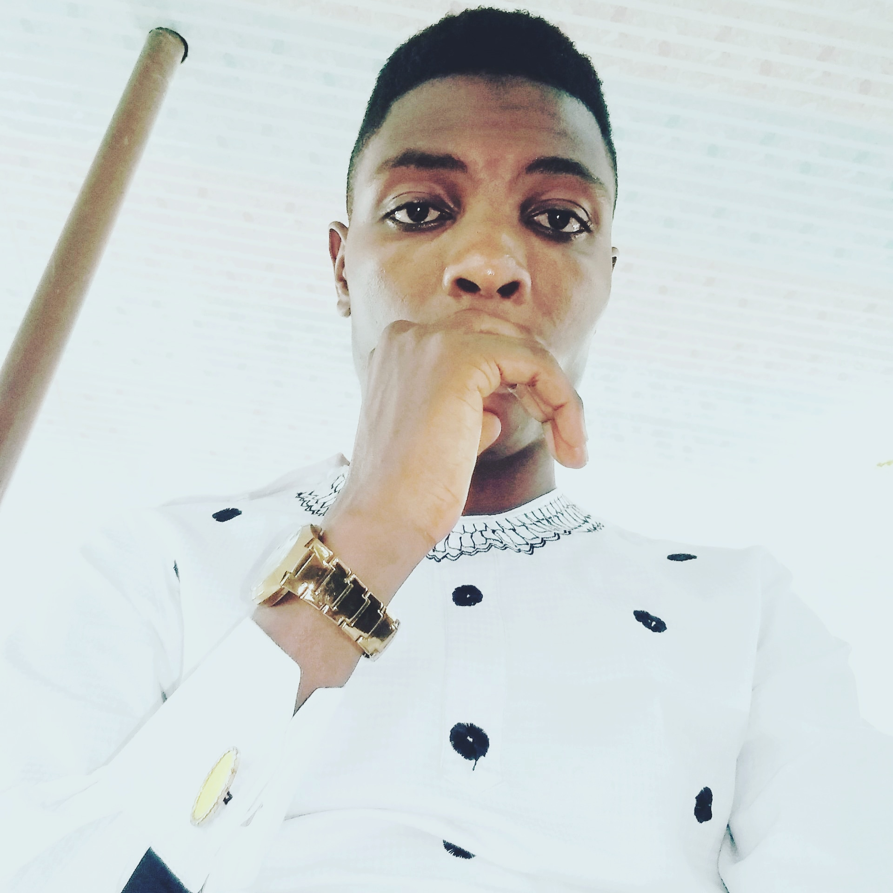

Mayowa Oyinlola
Frontend Developer

Contact
+2348068548916
lansoyin@gmail.com
Ilorin, NG
Skills
- HTML
- CSS
- JavaScript
- Project Management
Certification
- National Examination Council[NECO]
- National Diploma [ND]
Career Objectives
To build an enviable career and multi dimensional administration of any reputable organization via
hard
work, excellent performance, transparency, honesty, a deep sense of commitment and a great potential
for
further development in the working position I find my myself.
Work & Internship Experience
Android Developer Intern
-Andela (ALC 4.0), Ilorin, Kwara state
- Collaborated with cross-functional development team members to analyze potential system
solutions based on evolving client requirements.
- Worked closely with software development and testing team members to design and develop
robust
solutions to meet client requirements for functionality, scalability and performance.
Graphic Designer and Web Designer
-Reedrok Technologies- Ilorin, Kwara state
- Coordinated, created and scheduled content, designs and periodic updates to company
website
- Developed creative design for marketing packages, including print materials, brochures,
banners
and
signs
Education
Ordinary National Diploma in Computer Science
-Kwara State Polytechnics – Ilorin, Kwara State
- Graduated with Upper credit ( 3.03)
Referees
MR. ABRAHAM DAVIES.
SIGNEE, Success Trend [Idiroko Branch]
- Border, Idiroko, Ogun State
MR. ADEYEMI RIDWAN
CEO, Reedrok Technologies
-Elekoyangan Ilorin, Kwara State